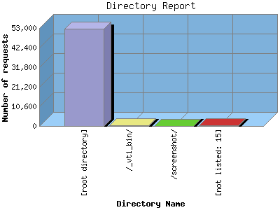

NPS Internet Solutions, Inc.
NPS Internet Solutions, Inc.
The Directory Report analyzes accesses to this web site's directories. This information can be useful in determining the most requested areas.
This report shows results with at least 0.010000 percent of the total bytes. This report is sorted by amount of bytes transferred.

| Directory Name | Number of requests | Number of page requests | Number of bytes transferred | |
|---|---|---|---|---|
| 1. | [root directory] | 52,567 | 5,217 | 6.366 GB |
| 2. | /_vti_bin/ | 457 | 0 | 24.304 MB |
| 3. | /screenshot/ | 10 | 0 | 1.216 MB |
| [not listed: 15] | 356 | 119 | 310.558 KB | |
This report was generated on August 16, 2004 03:59.
Report time frame December 30, 2003 01:23 to August 16, 2004 09:47.
| Web statistics report powered by: | |
|
NPS Internet Solutions, Inc.
|
|
| Web statistics report produced by: analog 5.32 / Report Magic 2.21 |